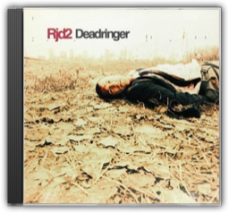
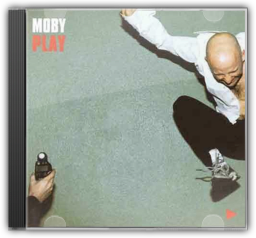
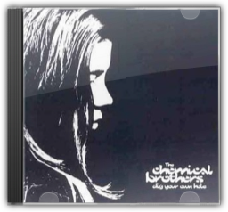
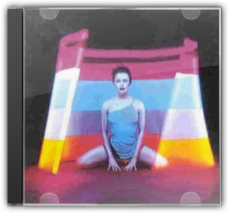
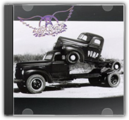
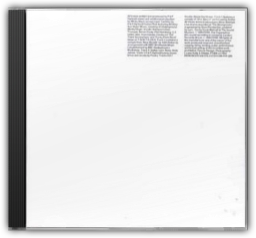
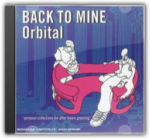
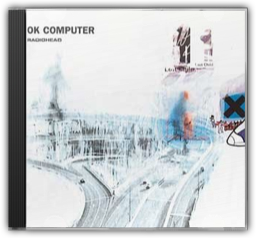
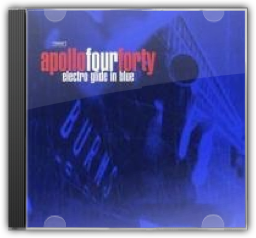

|

Deadringer
RJD2

There's a mellifluous, melodic feel to RJD2's production on Deadringerthat enables him to easily straddle the US/European divide between hip-hop and trip hop, even coming close to the intricate and lucid inventiveness of the Avalanches in places.

Play
Moby
The great iconoclast of techno returns with a smooth, sacred and exhilarating record. Play's concoction of breakbeat rhythms, ambient mixology and inspired blues and gospel samples cry out across musical genres and histories, imparting a time-tested wisdom to beat-driven ears. Moby's devout faith—in both God and his own musical whims—give this approach a sort of legitimacy that another, less sincere artist would never have. That sincerity reverberates through the beats and instrumental eclecticism like a pulse. The soulful refrains and proclamations in "Find My Baby" and "Natural Blues" somehow nestle between straight-up dance-floor rave-ups ("Bodyrock") and melt-in-your-mouth ambience ("Inside") with an effortless grace. Moby reaches across his turntables and finds something pure—almost organic. In fact, the album feels more natural than techno is ever supposed to feel, more spiritual than DJs are supposed to be able to muster and more alive than it has any right to be. Check out the spellbinding compilation Natural Bluesto hear the original source material from blues and spiritual singers such as Etta James, Vera Hall and BB King. —Matthew Cooke

Dig Your Own Hole
The Chemical Brothers
To follow up their bombastic 1995 album Exit Planet Dust, the Chemical Brothers fine-tuned their bombastic beats and produced a rock-solid pop album (pun intended). Dig Your Own Holefinds the common ground between rock & roll and techno, both in spirit and substance. Singles like "Block Rockin' Beats,""Elektrobank," and "Setting Sun" (featuring vocals by Oasis's Noel Gallagher) may lack the big hair and pomposity of rock music, but they make up for it in spades, with sampled and real guitars battling for space with sirens and distorted hip-hop drums. The album reeks of pure enthusiasm and energy, evoking a crowd-pleasing exuberance that makes Dig Your Own Holea Back in Blackfor the late 1990s. Pure stadium techno. —Matthew Corwine

Kylie Minogue
Kylie Minogue
The original title of this album was to be The Impossible Princess, before the death of Princess Diana necessitated a change of plan. The most experimental Kylie album to date features collaborations with the Manic Street Preachers (on the Motown-esque "Some Kind of Bliss" and the loungecore "I Don't Need Anyone"), as well as Dave Ball of the Grid (and Soft Cell), Rob Dougan of Clubbed To Death and, once again, Brothers In Rhythm. The album flits effortlessly between various genres: from Indian-mantra style on the opening "Too Far", to a weird combination of Irish and eastern influence on "Cowboy Style", to trip-hop on "Jump;" it also finds Kylie doing the indie-chick thing on the Manics tracks, snarling Republica-like on "Limbo", and expanding her vocal range with Bjork influenced vocals, particularly on "Say Hey." This is the first time we hear Kylie get angry, sneer and, in fact, seem anything other than sorted, which is kind of odd—but fans of the Jewel/Alanis school of soul-baring female singer-songwriters may be surprised by how honest the whole thing sounds. —Ronita Dutta |

Pump
Aerosmith
Having established their reputation as Comeback Kids with 1987's Permanent Vacation, Aerosmith proceeded to cement it with 1989's Pump. With hit singles like the expectedly raunchy "Love in an Elevator" and the unexpectedly socially relevant "Janie's Got a Gun" (which, unlike most socially relevant songs by hard rock bands, manages to avoid the cheese factor), Pumpwas proof positive that the boys were back. Everything that makes Aerosmith what they are is present here: a solid bluesy base, tight arrangements, sexy rhythms, and a heavy dose of fun. There are some nice touches too; check out the bass line on "Voodoo Medicine Man", or the blues-folk ending tacked onto "What It Takes" that, more than anything else on the album, reveals the band's roots. —Genevieve Williams

The Middle of Nowhere
Orbital
Having outgrown the happy house of the green and brown albums and exploited narrative far too complex for ambient techno, the Hartnoll brothers—Phil and Paul really do find themselves in some Eastern adventure in The Middle of Nowhere. Thus they prove again that they are the most reliable innovators in danceable electronic composition. The inchoate political rage of 1994's "Snivilisation" is here, but it has found purely instrumental claws that are unafraid to dig for new melodies. "Know Where to Run" gathers itself from some beastly buzzing weather to become a dance-floor creature lurching through the village at night like some urban nightmare and "I Don't Know You People" turns the dance floor into an escapist fantasyland once more with its grousing refrain, "nothing changes—goddamn you!" The highly evolved vocal softness of "Autumn" and the weirdly Tangerine Dream-gone-hip-hop "Style" keep a trip-hop story line seamlessly borne out on jungle and electro beats. Nowhere comprises a portrait of boom-boom techno that carjacks beats once lost in space to whole new worlds where breakthrough songwriting is an aesthetic ideal. The UK act who forced the sales charts fully into the postrock 90s is now realising the participatory promise of rock & roll liberation in the dance clubs, where music lives now. —Dean Kuipers

Back to Mine - Orbital
Orbital Orbital (Mixed By)
The Back to Mineseries has already brought us some very memorable compilations from a diverse collection of dance luminaries, including Morcheeba, MJ Cole, Groove Armada, Faithless, Nick Warren and Talvin Singh. Now it's the turn of famous brothers-in-rhythm Paul and Phil Hartnoll, aka Orbital, to offer a selection of the tunes that lie close to their hearts and get their heads bopping. Their effort is indulgently deep and impressively broad, and is certainly one of the series' most eclectic offerings yet. Starting with John Barry and His Orchestra's "The Knack", we are taken through a weird and wonderful selection of tastes and styles, leaping from soundtrack to ska, rave to reggae, industrial to psychedelic, punk to pop. The intensely wide range of sounds means that the LP doesn't flow quite as mellifluously as it might, but with songs by Lee Scratch Perry ("Justice to the People"), The Tornadoes ("Love and Fury"), PJ Harvey ("Kamikaze"), The Selecter ("Celebrate the Bullet"), Earth Leakage Trip ("No Idea"), Jethro Tull ("Living in the Past") and Plaid ("New Bass Hippo"), it's still an enjoyable, sprawling and educational album that manages to pull together a disparate but relevant bunch of pre, post and present dance tunes. —Paul Sullivan

O.K Computer
Radiohead
Whilst one suspects some kind of pre-millennial hysteria prompted Qmagazine's readers to vote OK ComputerThe Greatest Album Ever Made scarcely five months after its release, it certainly doesn't look stupid up there in the pantheon. Following the hot red rock attack of 1995's The Bends, OK Computerheads out into the cold deep space of prog-rock and comes back with stuff that makes mere pop earthlings like Stereophonics tremble. Whilst the eight-minute-long "Paranoid Android" comes across like "Bohemian Rhapsody" with a gun held to its head, and "Electioneering" is a little too like a kiddy-version of Blood And Chocolate-era Elvis Costello to be truly revelatory, the rest of OK Computerspans the sublime to the ridiculously sublime. Thom Yorke had been obsessed with Ennio Morricone during the recording of the album (in a haunted mansion, fact-fans), and it shows on the expansive space-dream of "Subterranean Homesick Alien" and the endlessly comforting closer "The Tourist". And if neither "No Surprises" (played on a toy guitar with Yorke and Ed O'Brien harmonising like a two-man Crowded House) nor "Lucky" (recorded in one day for the Bosnian aid album War Child—it reduced Yorke to tears the first time he heard it played back) make the hairs on your skin spit with electricity, then maybe you're with the Qreader who voted for Anitaby Anita Dobson. —Caitlin Moran

Electro Glide in Blue
Apollo 440
Unfairly dismissed by much of the electronica cognoscenti—too commercial, some sniffed: too calculated—this was, nevertheless, an ambitious (and mostly satisfying) attempt to fuse the volume and density of rock with the broad textural vocabulary of electronica. The single, "Ain't Talkin''Bout Dub," effectively defined the template, marrying a corrosive Van Halen guitar sample to chattering breakbeats; the remainder of the album was divided between variations on this theme (the slide guitar propelling "Altamont Super-Highway Revisited," the bluesy shuffle of "Tears Of The Gods"), and moments of almost meditative stillness, courtesy of the group's other incarnation, the Stealth Sonic Orchestra. The most accomplished of the latter is a ballad titled "Pain In Any Language," which features the last recorded vocal of late Associates frontman Billy MacKenzie, to whose memory this bold and singular album is dedicated. —Andrew McGuire |

Liam Clancy
Collection Total:
2121 Items
2121 Items
Last Updated:
Aug 4, 2013
Aug 4, 2013


 Made with Delicious Library
Made with Delicious Library